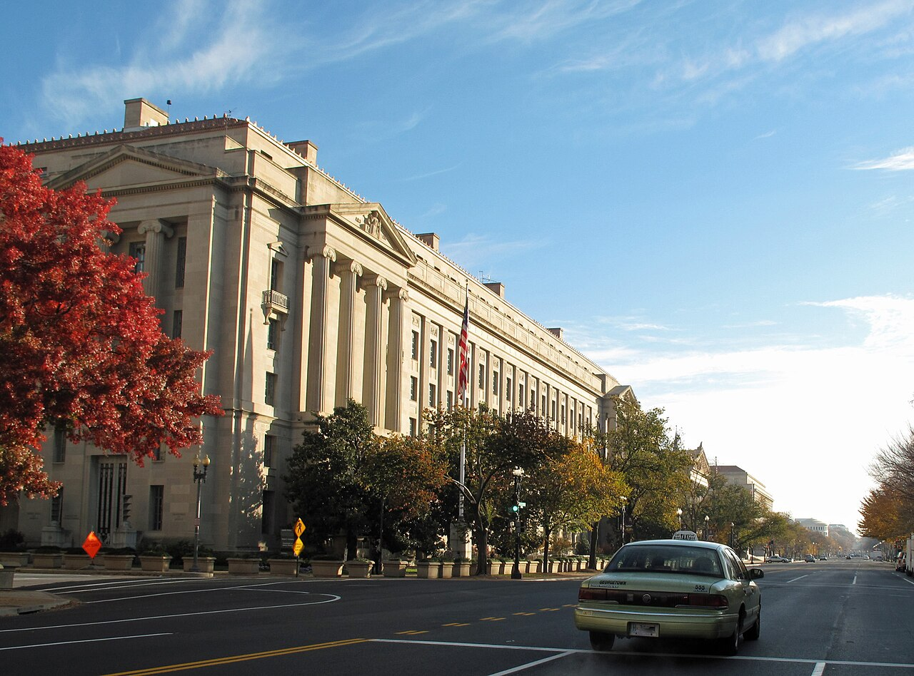

GRIEVANCE XV ◆ THE RULE OF LAW
He has urged the machinery of justice toward his adversaries, blurring the boundary between law and personal reprisal.
THE RECORD SHOWS
Federal investigations and prosecutions involving Trump’s critics have followed his public demands for action, raising serious questions about prosecutorial independence.

Reuters documented probes of political opponents and challenges to the Comey and James prosecutions. The defendants deny wrongdoing and allege vindictive prosecution; prosecutors contest those accounts. The existence of an investigation does not establish that the target committed a crime—or that the case was improperly ordered.
A DOCUMENTED SEQUENCE
3 MILESTONES- 2025–26Trump repeatedly called for inquiries and punishment of named critics and opponents.
- January 2026The investigation involving Federal Reserve chair Jerome Powell intensified concern that law enforcement could serve presidential pressure.
- September–October 2026Courts scrutinized prosecutions of James Comey and Letitia James as other prominent critics faced federal inquiries.